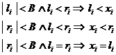

6. Optimization And Inverse Analyses
6.1 Definition of Optimization Problem and its Solution
6.1.1 Basic Terms
We state the optimization problem quite generally as
minimise
and ,
where .
Function f is called the objective
function, ci and cj are called constraint
functions and lk and
The set of points in which all constraints are satisfied is called feasible region. Solution of the problem is contained in the feasibleregion.
6.1.2 Installing and running the optimization program Inverse
In order to run Inverse, you need an executable for your platform and a I.G.’s software home directory referred to as ighome (which is default name for this directory). The executable is usually put to ighome.
Installation procedure is simple:
1. Copy the I.G.’s software home directory (ighome) somewhere on your hard disk, (e.g. in “c:\” on windows, in this case the I.G.’s software home would be “c:\ighome”). The location must be such that all users have read & write access to files in the directory.
2. Set the value of environment variable IGHOME to the location of the I.G.’s software directory (ighome). Note that the case matters on some platforms. The environment variable must be created if it does not yet exist, otherwise its value must be changed such that it contains the absolute path of ighome.
3. Add the bin subdirectory of the software home directory (ighome) to the path environment variable. You can usually use the previously defined variable IGHOME (e.g. %IGHOME%\bin on Windows or $IGHOME/bin on Unix-like systems) to refer to this directory.
4. Copy the executable for your platform to the bin subdirectory of ighome.
5. Now you can run the program in a terminal window. Usually you will have to re-open the terminal window so that the new environment variables will take effect.
You run Inverse by typing the name of its executable followed by command-line arguments. Usually the first (and often the only) argument is the name of the command file (or path, if the file is not contained in the current directory). Command file must contain instructions that are executed by Inverse.
On Windows, for example, provided that the file name of Inverse executable is inverse.exe and there is a command file named opt.cm in the current directory, you would run the program in the following way:
inverse opt.cm
The program, software home directory and some additional files can be downloaded from the download section of the Inverse home page.
6.1.3 Definition of the Problem in the Command file
The optimization problem and its solution procedure must be defined in the shell command file, which is interpreted by the interpreter.
The command file typically consists of three parts: the preparation part, the analysis block and the final action part. In the preparation part variables are typically allocated, data initialized and functions defined for use at a later time. The analysis block defines how direct analysis is performed. This block is interpreted every time the direct analysis is performed, either run from within some algorithm or as a consequence of user request. In the action part the optimization algorithms that lead to problem solution are run. Test analyses at different parameter sets or some other tests (e.g. tabulating of the objective function) can also be run in this part.
The preparation part and analysis block can usually be swapped. Individual allocations and definitions can be performed right before they are used, although the command file usually looks clearer if this is done in one place. The user must be careful about putting definitions and allocations in the analysis block because this block is iteratively interpreted. What concerns tasks that do not need to be performed in every analysis, it is better if they are invoked outside the analysis block so that they are performed only once.
6.1.4 Defining the Direct Analysis
The term “direct analysis” refers to the evaluation of the objective and constraint functions and possibly their gradients at a given set of optimization parameters. User defines how the direct analysis is performed in the analysis block of the shell command file. This is the block of code in the argument block of the analysis command, i.e. within the curly brackets that follow this command.
The analysis block is interpreted by the shell interpreter every time the direct analysis is performed. Direct analysis can be called by an optimization algorithm or by some other function invoked by the interpreter. Typical examples are tabulating functions or the analyse function for performing test direct analyses.
Data transfer between the direct analyses and the functions that invoke them is implemented through global shell variables with a pre-defined meaning. The shell takes care that the current set of optimization parameters is always in the vector variable parammom when the direct analysis is invoked. In the analysis block the user can therefore obtain parameter values from this variable using the interpreter and expression evaluator functions for accessing variables. In the similar way it is expected that after the direct analysis is performed its results will appear in the appropriate global shell variables. User must take care of that in the analysis block by storing results in these variables. For example, value of the objective function must appear in scalar variable objectivemom, values of constraint functions must appear in scalar variable constraintmom, objective function gradient in vector variable gradobjectivemom, gradients of constraint functions in vector variable gradconstraintmom, simulated measurements (in the case of inverse analyses) in vector variable measmom, etc. These variables with a pre-defined meaning are treated just like other user-defined variables and the same functions can be used for their manipulation. There are however some particularities in behaviour of variable manipulation functions in the case of variables with a pre-defined meaning. Rules are more or less the same, there is only some additional intelligence incorporated, which enables user not to specify dimensions that are already known to the shell. For details, see the “Shell Variables with a Pre-defined Meaning” chapter of the “User Defined Variables in the Optimization Shell Inverse” manual.
Within the analysis block the user is expected to run a numerical simulation with parameters found in vector parammom, combine its results to evaluate the requested function values (objective and constraint functions and their derivatives) and store these results in the appropriate variables with a pre-defined meaning. This can include a number of sub-tasks, for example parameter dependent domain transformation in the case of shape optimization problems (this is reduced to finite element mesh transformation in some cases). Interfacing the simulation programme, i.e. changing input data according to parameter values, running the programme and obtaining results, is usually an important issue, as well as combining of these partial results according to problem definition in order to derive final results. Several modules of the shell provide tools for performing such sub-task, and the user can combine these tools using the file interpreter according to the character of problems that are being solved.
All tools and algorithms of the shell are accessed through the shell file interpreter. This, together with the expression evaluator (the “calculator”) and interpreter flow control functions, gives the user a great flexibility at defining different optimization problems and also the solution procedures. The shell is in the first place designed for use with simulation programmes. For test purposes, however, the user can define optimization problems in such way that evaluation of objective and other functions do not include numerical simulation. The functions are in this case defined analytically using shell variables and expression evaluator. Such examples can be found in the directory of training examples (subdirectory “opt”).
6.1.5 Implicit Gradient Calculation
Some optimization algorithms need gradients of the objective and constraint functions beside their values. Most commonly, these should be calculated in the analysis block and stored in the appropriate pre-defined variables (e.g. gradobjectivemom or gradconstraintmom, see the manual on variables, chapter on pre-defined variables). This essentially means that the algorithm for calculation of the objective and constraint functions must be differentiated with respect to the design parameters. This is sometimes difficult to achieve, especially when some numerical simulation is used as a “black box” and the user does not have access to its source code.
The derivatives can always be obtained numerically e.g.[1] by sequentially perturbing values of individual parameters, calculating the functions at perturbed parameters and dividing the difference with respect to the response at original parameters by the perturbation (i.e. difference in parameter value or step size). This can be eventually programmed within the analysis block of the interpreter. Doing so, however, can significantly reduce the clearness and readability of the analysis block.
The tools have been providing for automatic implicit numerical calculation of the derivatives. When implicit derivative calculation is switched on, on any request for performing the analysis at given parameter values, the (non-derivative) analysis is actually performed with the original and perturbed parameter values. Numerical approximation of gradients of the objective and constraint functions is calculated on the basis of the results and stored to the appropriate pre-defined variables (most commonly gradobjectivemom and gradconstraintmom) together with function values at the original parameters of the request (objectivemom and constraintmom are commonly used to store these).
The interpreter functions for providing implicit numerical gradient calculation are described below.
6.1.5.1 analysisnumgradfdvec { stepvec }
Installs the implicit numerical calculation of gradients of the objective and constraint functions (if defined) with respect to optimization parameters by the forward difference scheme. This applies to the functions that are calculated by the direct analysis direct analysis, which includes interpretation of the analysis block. stepvec must be a vector value argument that specifies the step size for each parameter. Its dimension must therefore be the same as the number of parameters (i.e. the dimension of the pre-defined vector parammom). If stepvec is not specified, then the default step size (10-4) is taken for derivation with respect to all parameters. It is usually a very bad idea not to specify the step sizes because the accuracy of the derivatives depend essentially on it, and the optimal step size may vary drastically from case to case since it depends on scaling of the design parameters and on the level of noise of the differentiated functions.
After the call to the function, every direct analysis at a given set of parameters is replaced by a number of plain analyses. The first one is performed at the requested parameters and n others are performed at the parameter sets in which one parameter is perturbed by the appropriate step size as specified by stepvec, n being the number of parameters. After this, the function values calculated with the requested parameter values are stored as usual (e.g. in the pre-defined variables objectivemom or/and constraintmom). In addition, numerical approximations to the parameter gradients of these values are calculated and stored at the appropriate place[2] (e.g. in the pre-defined variables gradobjectivemom and gradonstraintmom). See the manual on variables, chapter on pre-defined variables for more details regarding the meaning of specific pre-defined variables and rules for their manipulation.
The accuracy of the numerically calculated derivatives crucially depends on the step size. The derivative calculation is mathematically exact for linear functions, and therefore there are two sources of error. The first one is because the function is normally not linear and this contributes larger errors where the step size gets large and the function deviates more from the linear model. The second source is due to the noise in the function value. If there is no other source of noise, at least the function values are inexact because of finite precision that is used for all computer operations. Errors in calculated derivatives that come from this source are amplified when the step size is reduced, and die away when the step size gets large compared to the amplitude of noise. Therefore, there exists an optimal step size which is large enough with respect to noise amplitude and yet small enough that the function is adequately approximated by a linear model within the step size. The user should provide the step size that is not necessarily optimal, but is a good compromise for both sources of error. When it is hard to estimate the level of noise, the step size should be taken that is a bit smaller than the tolerance for the optimum, and the tolerance should be set rather conservatively in order to avoid failure of algorithms due to excessive noise.
6.1.5.2 analysisnumgradfd { stepsize }
Does the same as analysisnumgradfdvec, except that the step size for all parameters are set equal to stepsize, which is a scalar value argument. If stepsize is not specified then a default step size (10-4) is taken. However, it is usually a very bad idea not to specify the step size because the accuracy of the derivatives depend essentially on it, and the optimal step size may vary drastically from case to case since it depends on scaling of the design parameters and on the level of noise of the differentiated functions.
6.1.5.3 analysisplain { }
Cancels the implicit numerical differentiation of the objective function (and constraint functions if defined) and places instead the original analysis function, which performs the direct analysis (including interpretation of the analysis block) at only one set of design parameters.
6.1.5.4 analysisnumgradprn { doprn }
If the counter value argument doprn is different than 0 then reporting on gradient calculation is switched on, which can be used for control.
6.2 Optimization algorithms
6.2.1 optfsqp { numob numnonineq numlinineq numnoneq numlineq eps epseqn maxit grad initial < lowbound upbound > }
Performs the fsqp (feasible sequential quadratic programming) optimization algorithm of Craig Lawrence, Jian L. Zhou and Andre Tits, which is the basic and most powerful nonlinear programming algorithm built in Inverse.
Arguments:
- numob – number
of objective functions (should normally be 1) – counter value argument.
- numnonineq - number of non-linear inequality
constraints – counter value argument.
- numlinineq -
number of linear inequality constraints – counter value argument.
- numnoneq -
number of non-linear equality constraints – counter value argument.
- numlineq -
number of linear equality constraints – counter value argument.
- eps - final norm requirement for
the
- epseqn - maximum violation of nonlinear equality
constraints at an optimal point.
Both criteria must be satisfied to stop the algorithm (the second
one is in effect only if there are equality constraints) – scalar value argument.
- maxit - maximum
number of iterations – counter value
argument.
- grad - specifies
if gradients are provided by the direct analyses (1) or should be
calculated numerically (0) – counter
value argument.
- initial -
initial guess – vector value
argument.
- lowbound –
lower bounds on parameters – vector value argument.
- upbound -
upper bounds on parameters – vector value argument.
If vector value arguments lowbound and upbound are not specified then parameters are not bounded below or above. If they are specified then those components for which the corresponding components of lowbound are greater or equal to the corresponding components of upbound are not bounded.
Note:
Inequality constraints are stated as in (6.0, namely
, (6.0
where cj are the constraint functions whose value is expected from the analysis function.
In variables which hold values or derivatives of constraint functions,
these must appear in the appropriate order, the same as in the argument block
of the function. First must be non-linear inequality constraints, then linear
inequality constraints, then non-linear equality constraints and finally linear
equality constraints (if any of these are specified, of course).
Remarks:
See introductory section for how the problem should be defined! You can
also take a look at inquick2.pdf, which can be obtained at
http://www.c3m.si/inverse/doc/other/index.html
.
A detailed description of the fsqp algorithm can be found at
http://www.isr.umd.edu/Labs/CACSE/FSQP/fsqp.html
.
6.2.2 minsimp { tolx tolf maxit printlevel initial step }
Performs the non-gradient unconstrained minimization algorithm based on the Nelder-Mead simplex method. This is a non-gradient algorithm suitable also for non-differentiable and even non-continuous functions that have a well defined unconstrained minimum. The basic principle is similar to the Nelder-Mead simplex algorithm.
- tolx - tolerance
on optimal parameters (approximate). It is a vector value argument, a tolerance is specified for each
co-ordinate. If vector dimension is less than the problem dimension then
missing components are replaced by the first component. For components
that are 0, no tolerance is imposed.
- tolf - tolerance
on on optimal value of the objective function (scalar argument). If it is 0 then this tolerance is not
imposed.
- maxit – maximal number of iterations (counter argument)
- printlevel – the level of output produced (counter argument). 0 or less is replaced by 2.
- 1 - data about arguments and optimization results are printed.
- 2 – basic information about iterations and more detailed information about results are also printed.
- 3 – simplex (co-ordinates of apices and values of the objective function) is also printed during iterations and at the
- 4 – Complete results are printed, included values of the constraint functions
- 5 – at the end, all results of all analyses are also printed. Sets of results in all simplices over al iterations are also printed in the list form readable by Mathematica.
- initial – initial guess (vector value parameter)
- step – step sizes in different directions used to create the initial simplex (vector value parameter)
Optimal parameters are written to paramopt
and optimal value of the objective function to objectiveopt. Storage of other functions or gradients is not
guaranteed.
Remarks:
See introductory section for how the problem should be defined! You can
also take a look at inquick2.pdf, which can be obtained at
http://www.c3m.si/inverse/doc/other/index.html
.
6.2.3 nlpsimp { numconstr tolx tolf tolconstr maxit printlevel initial step }
Performs the basic non-linear constraint simplex optimization algorithm of Igor Grešovnik. This is a non-gradient algorithm suitable also for non-differentiable and even non-continuous functions that have a well defined constrained minimum. The basic framework is similar to the Nelder-Mead simplex algorithm.
- numconstr - the
number of constraints (equality + inequality), counter argument
- tolx - tolerance
on optimal parameters (approximate). It is a vector value argument, a tolerance is specified for each
co-ordinate. If vector dimension is less than the problem dimension then
missing components are replaced by the first component. For components
that are 0, no tolerance is imposed.
- tolf - tolerance
on on optimal value of the objective function (scalar argument). If it is 0 then this tolerance is not
imposed.
- tolconstr - tolerance for constraint residuum (scalar argument; if it is 0 then none of the constraints may be violated in the solution)
- maxit – maximal number of iterations (counter argument)
- printlevel – the level of output produced (counter argument). 0 or less is replaced by 2.
- 1 - data about arguments and optimization results are printed.
- 2 – basic information about iterations and more detailed information about results are also printed.
- 3 – simplex (co-ordinates of apices and values of the objective function) is also printed during iterations and at the
- 4 – Complete results are printed, included values of the constraint functions
- 5 – at the end, all results of all analyses are also printed. Sets of results in all simplices over al iterations are also printed in the list form readable by Mathematica.
- initial – initial guess (vector value parameter)
- step – step sizes in different directions used to create the initial simplex (vector value parameter)
Optimal parameters are written to paramopt
and optimal value of the objective function to objectiveopt. Storage of other functions or gradients is not
guaranteed.
Note:
Inequality constraints are stated as
(6.2)
where cj are the constraint functions whose value is expected from the analysis function.
Remarks:
See introductory section for how the problem should be defined! You can
also take a look at inquick2.pdf, which can be obtained at
http://www.c3m.si/inverse/doc/other/index.html
.
6.2.4 NLPSimpS, nlpsimps { numconstr tolx tolf tolconstr maxit printlevel initial step }
A variant of the constraint nonlinear simplex method of Igor Grešovnik which ranges analysis
results with violated constraints by the sum of constraint residuals. This
is a non-gradient algorithm suitable also for non-differentiable and even
non-continuous functions that have a well defined constrained minimum. The
basic principle is similar to the Nelder-Mead
simplex algorithm.
Arguments are the same as for nlpsimp.
6.2.5 nlpsimpbound0 { numconstr tolx tolf tolconstr maxit printlevel initial step bignum < lowbounds upbounds bignum < kpen kconstr < numviolations maxresid > > > }
Performs the basic non-linear constraint simplex optimization algorithm of Igor Grešovnik. This is a non-gradient algorithm suitable also for non-differentiable and even non-continuous functions that have a well defined constrained minimum. The basic framework is similar to the Nelder-Mead simplex algorithm.
- numconstr - the
number of constraints (equality + inequality), counter argument
- tolx - tolerance
on optimal parameters (approximate). It is a vector value argument, a tolerance is specified for each
co-ordinate. If vector dimension is less than the problem dimension then
missing components are replaced by the first component. For components
that are 0, no tolerance is imposed.
- tolf - tolerance
on on optimal value of the objective function (scalar argument). If it is 0 then this tolerance is not
imposed.
- tolconstr - tolerance for constraint residuum (scalar argument; if it is 0 then none of the constraints may be violated in the solution)
- maxit – maximal number of iterations (counter argument)
- printlevel – the level of output produced (counter argument). 0 or less is replaced by 2.
- 1 - data about arguments and optimization results are printed.
- 2 – basic information about iterations and more detailed information about results are also printed.
- 3 – simplex (co-ordinates of apices and values of the objective function) is also printed during iterations and at the
- 4 – Complete results are printed, included values of the constraint functions
- 5 – at the end, all results of all analyses are also printed. Sets of results in all simplices over al iterations are also printed in the list form readable by Mathematica.
- initial – initial guess (vector value parameter)
- step – step sizes in different directions used to create the initial simplex (vector value parameter)
- lowbounds – vector of lower bounds on optimization parameters, see explanation below (vector value parameter)
- upbounds – vector of upper bounds on optimization parameters, see explanation below (vector value parameter)
- bignum – large positive value which is used for deciding whether components of lower and upper bound vectors actually define bound constraints, see explanation below (vector value parameter)
- kpen – factor for penalty generating function, default 1; must be non-negative; if non-zero then parameter bounds are handled by simultaneous parameter transformation (such that bound constraints are always satisfied in all points in which the original analysis function is called) and addition of penalty terms according to bound violations of untransformed parameters (scalar value parameter)
- kconstr – factor for constraint generating function, default 0; must be non-negative; if non-zero then parameter bounds are converted to normal constraints that are added to problem definition (scalar value parameter)
- numviolated – if non-zero then the number of violated constraints is used as the first criterion in comparison of analysis results (counter value parameter)
- maxresid – if non-zero then the maximal residuum (positive constraint function) is used in comparison of results instead of the sum of residua; either of these criteria is used right before comparison of the objective function values (counter value parameter)
Bound constraints are specified by vector arguments lowbounds and upbounds,
whose components specify lower and upper bounds, respectively, for individual
components of the parameter vector.
If for some index the specified lower bound is larger than the
corresponding upper bound then it is understood that no bounds are defined for
this component of the parameter vector.
If absolute value of some component of either lower or upper bound is
greater than bignum, then it is also
assumed that the corresponding bound is not defined (which allows to define for
a given component of the parameter vector only lower or only upper bound). If
there are components of the parameter vector for which only lower or only upper
bound is defined, then the large positive number bignum must be specified such that components of lower or upper
bound vectors whose absolute vlue id larger than bignum are not taken into account.
bignum can be set to 0. In this case, the
default value is taken, but this value can not fit the actual problem that is
solved.
If lowbounds and upbounds are not specified then the
normal nonlinear constraint simplex algorithm is performed.
Optimal parameters are written to paramopt
and optimal value of the objective function to objectiveopt. Storage of other functions or gradients is not
guaranteed.
Notes:
Inequality constraints are stated as
(6.3)
where cj are the constraint functions whose value is expected from the analysis function.
Bound constraints specify that
, (4)
where l is a vector of lower bounds (argument
lowbounds) ant r is a vector of upper bounds (argument upbounds). Each bound (lower or upper) therefore defines an
additional constraint. Corresponding to lower and upper bounds, constraint
functions can be assigned e.g. in the
following way:
. (5)
In standard form for definition of bound constraints in Inverse, neither lower nor upper bound
on a given component of the parameter vector is considered defined if the
corresponding component of the lower bound vector is larger than the
corresponding component of the upper bound vector, i.e. if .
In addition, a lower or uper bound is considered unspecified if absolute
value of the corresponding component of the lower or upper bound vector is
larger than some specified large positive number (argument bignum, denoted by B).
If the corresponding components of the lower and upper bound vectors are
the same, then this defines an equality constraint. To summarize, lower and
upper bounds on optimization variables (parameters) are defined conditially in
the following way:
 . (6)
Handling of bound
constraints
Two ways of handling bound constraints can be combined and are governed by
arguments kpen and kconstr (if not specified, the default
values taken are 1 and 0, respectively). These coefficients must be
non-negative. A zero coefficient means that the corresponding method of
handling bound constraints is not imposed.
Coefficient kpen corresponds to
transformation of parameters with addition of penaty terms for violated bound
constraints. The original analysis is always performed at transformed
parameters that satisfy all bound constraints (original parameters taht do not
satisfy bound constraints are simply shifted on bounds). In addition, penalty
terms are added to the objective function for each bound constraint that is
violated by non-transformed parameters. The penalty term is zero for nonviolated
constraints, and grows linearly with the magnitude of violation of a particular
constraint, with factor kpen.
Coefficient kconstr corresponds
to conversion of bound constraints to usual constraints that are added to the
original problem. Each bound constraint is represented by linear constraint
function with coefficient kconstr,
whose argument is a function of the difference between the parameter component
and the corresponding bound (the sign is taken according to whether there is a
lower or upper bound in question). The solution of the modified problem
therefore satisfies the original constraints plus the bound constraints.
Defining (i.e. setting non-zero) both kpen and kconstr is
currently considered the best practice. Since bound constraints are
convex it is recommendable that kconstr
is set high enough that bound constraint functions grow more rapidly than other
constraint functions in the domain that is rougly defined as the domain between
the starting guess and the closest point in the feasible region.
Remarks:
See introductory section for how the problem should be defined! You can
also take a look at inquick2.pdf, which can be obtained at
http://www.c3m.si/inverse/doc/other/index.html
.
6.2.6 solvopt { numconstr numconstreq tolx tolf tolconstr maxit lowgradstep initial }
Performs the SolvOpt optimization algorithm of Alexei Kuntsevich & Franz Kappel. This algorithm is particularly suited for non-smooth differentiable functions.
- numconstr - the
number of constraints (equality + inequality), counter argument.
- numconstreq - the number of equality constraints. If there are
equality constraints, these must be returned at the ens (after inequality
constraints), counter argument.
- tolx - relative
tolerance on optimal parameters (infinity norm), scalar argument.
- tolf - relative
tolerance on on optimal objective function, scalar argument.
- tolconstr - tolerance for constraint residuum (maximal violation of any constraint – absolute value for equality constraints), scalar argument.
- maxit – maximal number of iterations, counter argument.
- lowgradstep – the smallest step size for numerical calculation of gradients. If 0 then gradients provided by the analysis function are used, otherwise the algorithm will perform numerical differentiation of the constraint functions, scalar argument.
- initial – initial guess (vector value parameter), vector argument.
Optimal parameters are written to paramopt
and optimal value of the objective function to objectiveopt. Storage of other functions or gradients is not
guaranteed.
Warning:
Inequality constraints are stated as
, (6.7)
where cj are the constraint functions whose value is expected from the analysis function.
Remarks:
See introductory section for how the problem should be defined! You can
also take a look at inquick2.pdf, which can be obtained at
http://www.c3m.si/inverse/doc/other/index.html
.
A detailed description of the SolvOpt algorithm can be found at
http://www.kfunigraz.ac.at/imawww/kuntsevich/solvopt/
.
6.3 Older functions for optimization
6.3.1 inverse { methodspec params }
This function performs different types of optimization algorithm. methodspec determines which optimization algorithm is used. It is followed by parameter specifications params, which are dependent on the type of algorithm used.
methodspec begins either with string 1d or nd, indicating whether we will solve one-dimensional (one parameter) or multi-dimensional problems, respectively. The second part of methodspec is a string that specifies the method more precisely. Method and parameter specifications for different methods are described below.
6.3.1.1 inverse { 1d parabolic x0 step0 tol maxitbrac maxit }
Performs minimization of the objective function of one parameter. Successive three points quadratic approximations of the objective function are used where possible. The minimization is performed in two steps.
In the first step, the interval containing a local minimum is searched for. This is achieved by searching for combination of three points such that the middle point has the lowest value of the objective function. The first point is given by the user (x0), and the second two points are obtained by adding the initial bracketing step (step0) to that point once and twice, respectively. Then the three points are moved, if necessary, until the bracketing condition is reached (i.e. the middle point has the lowest value of the objective function).
In the second step, the bracketing interval that contains the three bracketing points is narrowed in such a way that the bracketing condition remains satisfied. In each iteration a new point is added in the larger of the two intervals defined by the three bracketing points. Among four points we obtain this way, those three which satisfy the bracketing condition and define the smallest interval are kept for the next iteration. The point that is added is usually chosen by finding the minimum of quadratic parabola that through the current bracketing points. This is not done if one of the two intervals becomes much smaller, since in such cases successive quadratic approximations can converge slowly.
x0 is the initial point, and step0 is the initial step of the bracketing stage. The second and the third point of the initial bracketing triple are obtained by adding step0 to x0 once and twice, respectively. tol is the tolerance for function minimum. The algorithm terminates when the difference between the highest and the lowest value of the objective function in the current three bracketing points is below tol. maxitbrac is the maximal allowed number of iterations at searching for bracketing triple. If the algorithm fails to find the three points satisfying the bracketing condition in maxitbrac iterations, it terminates and reports an error. maxit is the maximal allowed number of iterations in the second stage.
6.3.1.2 inverse { nd simplex tol maxit startguess }
Obsolete! Use other functions instead!
Performs minimization of the objective function by simplex method. Apices of a simplex is successively moved in such a way that the simplex moves and shrinks toward function minimum. Simplex is a geometrical body in an n-dimensional space that has n+1 dimensions.
tol is tolerance for function minimum. The algorithm terminates when the difference between the greatest and the least value of the objective function in simplex apices becomes less than tol. maxit is the maximal allowed number of iterations. If the minimum is no reached in maxit iterations, the algorithm terminates and reports an error. startguess is the starting guess, containing the initial simplex. This must be a matrix of dimensions numparam+1 x numparam. Rows of this matrix represent apices of the initial simplex.
Warning:
Use optsimplex instead of this command!
inverse is becoming an obsolete command and will be replaced by some other commands in the future. However, the command will remain implemented in the programme and will behave in the same way through a lot of future versions.
6.3.2 optfsqp1 { numob numnonineq numlinineq numnoneq numlineq eps epseqn maxit grad { initial } { lowbound } { upbound } }
Obsolete! Use optfsqp instead!
Performs the fsqp (feasible sequential quadratic programming) optimization algorithm of Craig Lawrence, Jian L. Zhou and Andre Tits, which is the basic and most powerful nonlinear programming algorithm built in Inverse.
numob is the number of objective functions
(usually one), numnonineq the number of non-linear inequality
constraints, numlinineq the number of linear inequality
constraints, numnoneq the number of non-linear equality
constraints and numlineq the number of linear equality
constraints. eps is the final norm
requirement for the Newton direction and epseqn
maximum violation of nonlinear equality constraints at an optimal point. Both
criteria must be satisfied to stop the algorithm (the second one is in effect
only if there are equality constraints). maxit
is the maximum number of iterations. grad
specifies if gradients are provided by direct analyses (1) or should be
calculated numerically (0). initial
is the initial guess and lowbound and
upbound are vectors of lower and
upper bounds on parameters. All three vectors must be in curly brackets. The
components which are not specified in the lowbound
or upbound vectors are not bounded
below or above, respectively. Dimensions must be specified for all three
vectors, and all components must be specified for initial.
6.3.3 optsimplex { tol maxit startguess }
Obsolete! Use minsimp
instead!
Performs unconstrained minimization by the Nelder-Mead simplex method. Scalar argument tol is a tolerance, counter argument maxit is maximal number of iterations and matrix argument startguess is a matrix whose rows are co-ordinates of apices of the initial simplex. One should take care that startguess represents a simplex with non-zero volume, which means that all vectors along the edges of the simplex joining in a given common apex are linearly independent.
6.4 Auxiliary tools
6.4.1 Testing the Direct Analysis
6.4.1.1
analyse { <
param calcobj calcconstr calcgradobj calcgradconstr > }
Performs the direct analysis at the specified parameter param.
If param is not specified then the direct analysis is performed at parameters stored in the pre-defined variable parammom. The pre-defined vector parammom must therefore be set in this case before the function is called. The values of the pre-defined global variables that hold analysis results are printed to the programme’s standard output and output file.
If the vector value argument param is specified then the analysis is performed at the specified parameters. In this case, the scalar value arguments calcobj, calcconstr, calcgradobj and calcgradconstr are the evaluation flags that define which response functions should be evaluated (they refer to the objective function, constraint function(s), gradient of the objective function and gradient(s) of the constraint function(s), respectively).
6.4.2 Tabulating Functions
6.4.2.1 taban, taban1d { point0 point1 numpt centered factor scaling < printtab printparam printlist printobj printconstr printgradobj printgradconstr > }
6.4.2.2 taban2d { point0 point1 point2 numpt1 centered1 factor1 scaling1 numpt2 centered2 factor2 scaling2 < printparam printlist printobj printconstr printgradobj printgradconstr > }
6.4.2.3 tab1d { kindspec point0 point1 numpt factor printparam printmeas }
6.4.2.4 tab2d { kindspec point0 point1 numpt1 factor1 point2 numpt2 factor2 printparam printmeas }
6.4.2.5 linetab { kindspec args }
6.4.2.5.1 linetab { lin numpt ppar pmeas point1 point21 }
6.4.2.5.2 linetab { exp numpt
pppar pmeas factor point1 point2 }

6.4.2.6 tab1d0 { which val1 val2 numpt pobjective pmeas }
6.4.2.7 tab2d0 { whichx x1 x2 numptx whichy y1 y2 numpty pobjective pmeas }
6.4.2.8 tabline0 { kindspec args }
6.4.2.8.1 tabline0 { lin numpt pobjective pmeas point1 point21
}
6.4.2.8.2 tabline0 { exp numpt
factor pobjective pmeas point1 point2 }
6.5 Approximation tools
6.5.1 Smooth approximation
6.5.1.1 smoothapproxsimpbas { type samples rweight point which valspec <gradspec> <hgrad> }
Setmatrix {samp 100 3 {} }
setvector {point 3 {10, 1.3, 55 }}
setvector {rweight 3 {0.5, 0.5, 0.5}}
. . . *{ sampling functions }
setcounter {which 1}
setcounter {val 0}
smoothapproxsimpbas{ 4, #samp #rweight #point #which val[] }
6.5.1.2 smoothapproxsimp { samples rweight point which valspec <gradspec> }
6.5.1.3 smoothmeas { meas rweightrel resdiv numit smoothspec }
7.
Uniform File Interface Between Optimization and Analysis
Programs
7.1 Interpreter functions
7.1.1.1 fileanalysis { ancommand aninfile anoutfile < cd > }
myanalysis in.dat out.dat
...
analysis {
fileanalysis { “myanalysis in.dat out.dat”,
“in.dat”, “out.dat” }
}
...
“convertaninfile in.dat \n myanalysis in.dat out.dat \n convertanoutfile out.dat”
...
setstring { ancom “convertaninfile in.dat \n myanalysis in.dat out.dat \n convertanoutfile out.dat” }
setstring { aninfile “in.dat” }
setstring { anoutfile “out.dat” }
...
analysis {
fileanalysis { #ancom, #aninfile, #anoutfile }
}
...
7.1.1.2 fileanalysis_oneline { ancommand aninfile anoutfile < cd > }
7.1.1.3 filewriteaninput { filename < cd > }
analysis{
filewriteaninput {“anin.dat”, “0”}
system { “analyse anin.dat anout.dat” }
filereadanres{ “anout.dat” }
}
7.1.1.4 filewriteaninput_oneline { filename < cd > }
7.1.1.5 filereadanres { filename }
7.1.1.6 filewriteanres { filename }
7.1.1.7 filereadaninput { filename }
7.1.1.8 fileanalysis_xml { ancommand aninfile anoutfile < cd > }
7.1.1.9 filewriteaninput_xml { filename < cd > }
7.1.1.10 filereadanres_xml { filename }
7.1.1.11 filewriteanres_xml { filename }
7.1.1.12 filereadaninput_xml { filename }
7.1.1.13 parsefilevar { filename < type1 varspec1 > < type2 varspec2 > … < command1 > <command2 > … }
*{ Allocation of variables for storage of the data read form the file: }
newvector { vecvar[5] }
newmatrix { mat[] }
parsefilevarprint{ "parsed.dat",
"count", NULL[],
"scal", NULL[],
"vec", vecvar[1],
"mat", mat[],
"str", NULL[],
"str", NULL[],
"in",
"scal", NULL[],
"vec", vecvar[2],
"out",
"scal", NULL[],
"scal", NULL[],
"anpt", NULL[],
"scal", NULL[],
"stop"
}
printvector{ vecvar[1] }
printvector{ vecvar[2] }
printmatrix{mat}
exit{}
7.2 File Formats
In order to use the uniform file
interface, the analysis program must be able to read analysis input files that
provide calculation flags and parameter values, and must be able to generate
the output file in a proper way, such that analysis results can be correctly
read by the optimization program Inverse.
The file formats used in the uniform file interface are provided by the free
optimization library IOptLib and are therefore free formats. They can be freely
used by any other software (either commercial or free software), without
requesting prior permission or paying royalty fees.
…
double x;
FILE *fp;
…
fprintf(fp,“%.30lg”,x);
7.2.1 File format for analysis request (analysis input file)
{ { p1, p2, … }, { reqcalcobj, reqcalcconstr, reqcalcgradobj, reqcalcgradconstr }, cd }
7.2.2 File format for analysis results (analysis output file)
{
{ p1, p2 ... },
{
calcobj, obj,
calcconstr, { constr1, constr2, ... },
calcgradobj, { dobjdp1, dobjdp2, ... },
calcgradconstr,
{
{ dconstr1dp1, dconstr1dp2, ... },
{ dconstr2dp1, dconstr2dp2, ... },
...
},
errorcode
},
{ reqcalcobj, reqcalcconstr, reqcalcgradobj, reqcalcgradconstr }
< , { ind1, ind2, ... }, { coef1, coef2, ... }, defdata >
}
{ {1.11, 2.22}, { 1, 6.1605, 1, {-0.165, -2.44} , 1, {2.22, 4.44}, 1, { {-1.5, 0.}, {0., -2.} }, 0 }, { 1, 1, 1, 1}, {}, {}, "3" } }
{ {1.11, 2.22}, { 1, 6.1605, 1, {-0.165, -2.44} , 0, { }, 0, { }, -1 }, { 1, 1, 1, 1}, {33, 45}, {2.5, 3.33 38.1}, "3" } }
7.2.3 XML formats
7.2.3.1 XML format for analysis results (analysis output file):
7.2.3.1.1 Format rules (general)
7.2.3.1.2 Analysis output-specific rules
Example 1: Analysis output file in XML format (2 parameters, 2
conatraints, all values and gradients calculated).
<!-- Analysis output file,
created by analysis wrapper. -->
<data type="analysispoint" mode="analysis_output"
<ret type="counter">0</ret>
<reqcalcobj type="counter">1</reqcalcobj>
<reqcalcconstr type="counter">1</reqcalcconstr>
<reqcalcgradobj type="counter">1</reqcalcgradobj>
<reqcalcgradconstr type="counter">1</reqcalcgradconstr>
<calcobj type="counter">1</calcobj>
<calcconstr type="counter">1</calcconstr>
<calcgradobj type="counter">1</calcgradobj>
<calcgradconstr type="counter">1</calcgradconstr>
<param type="vector" dim="2">
<vector_el type="scalar"
<vector_el type="scalar"
</param>
<obj type="scalar">0.20088905308774715</obj>
<constr type="table" eltype="scalar" dim="2">
<table_el type="scalar"
<table_el type="scalar"
</constr>
<gradobj type="vector" dim="2">
<vector_el type="scalar"
<vector_el type="scalar"
</gradobj>
<gradconstr type="table" eltype="vector" dim="2">
<table_el type="vector" dim="2"
<vector_el type="scalar"
<vector_el type="scalar"
</table_el>
<table_el type="vector" dim="2"
<vector_el type="scalar"
<vector_el type="scalar"
</table_el>
</gradconstr>
<!-— Optional definition data: -->
<cd type="string">Definition data</cd>
</data>
Example 2:
Another analysis output file with only partial output provided (3 parameters, 2
constraint, no gradients requested or calculated, request flags not specified).
<!-- Analysis output file,
created by analysis wrapper. -->
<data type="analysispoint" mode="analysis_output"
<ret type="counter">0</ret>
<calcobj type="counter">1</calcobj>
<calcconstr type="counter">1</calcconstr>
<calcgradobj type="counter">0</calcgradobj>
<calcgradconstr type="counter">0</calcgradconstr>
<param type="vector" dim="3">
<vector_el type="scalar"
<vector_el type="scalar"
<vector_el type="scalar"
</param>
<obj type="scalar">72.424979429783</obj>
<constr type="table" eltype="scalar" dim="2">
<table_el type="scalar"
<table_el type="scalar"
</constr>
</data>
7.2.3.2 XML format for analysis input file
7.2.3.2.1 Analysis input-specific rules
Example 3: Analysis output file in XML format.
<!— Analysis input file,
created by IOptLib. -->
<data type="analysispoint" mode="analysis_input"
<reqcalcobj type="counter">1</reqcalcobj>
<reqcalcconstr type="counter">1</reqcalcconstr>
<reqcalcgradobj type="counter">1</reqcalcgradobj>
<reqcalcgradconstr type="counter">1</reqcalcgradconstr>
<param type="vector" dim="2">
<vector_el
type="scalar"
<vector_el
type="scalar"
</param>
<!-— Optional definition data: -->
<cd type="string">Definition data</cd>
</data>
7.2.3.3 XML format for storage of analysis results (“analysis point”):
7.3 Solution Scheme

Figure 1: Typical software organization when using uniform
file interface between optimization and analysis module (which are implemented
as stand-alone programs). Analysis module is a program that reads parameters
and calculation flags from analysis input file, performs direct analysis (i.e.
calculates the objective and constraint functions and eventually their
gradients) and outputs these results to the analysis output file (response
file). In the scheme, {α, d} denote optimization parameters, f is objective function and ci constraint functions.
Solid arrows denote data flow and dotted arrows denote calling directions.
Horizontal arrows denote calling directions that are commonly present. Other
calls are performed when the optimization and simulation modules are integrated
in a broader framework.
7.4 Demonstrative example
7.4.1 List of files
The main files are the following:
7.4.2 Running the example and using custom analysis program
invan opt.cm
7.4.3 Using a different analysis program
setstring{ ancommand "my_analysis inputfile outputfie" }